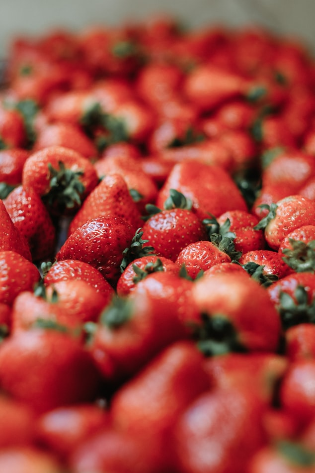

딸기

딸기 맛있어
딸기
는 정말 맛있다. 얼른 제철이 와서 달달한 딸기에 우유 넣고 설탕이나 꿀에 섞어 먹고 싶다.
또 모 쓰냐고 정말 페이지 채우는 것도 평소에 생각 많이 하고 다닌 사람이나 뚝딱 채우지 나는 너무 힘들다. 솔직히 태그어쩌고 하면서 영상 듣고 따라하는 건 어어~ 그렇고만~ 하는데, 이렇게 갑자기
내용은 알아서 채워보세요
하며 보내는 말엔 갈피를 잡지 못 하고야 마는 것이다.
초코 페이지도 채워야 하는데 막막허다.